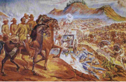

Historia
Fundación: Fue fundada en 1546 tras el descubrimiento de ricos yacimientos de plata. En el siglo XVII, Zacatecas llegó a producir hasta una quinta parte de la plata mundial .
Fundación: Fue fundada en 1546 tras el descubrimiento de ricos yacimientos de plata. En el siglo XVII, Zacatecas llegó a producir hasta una quinta parte de la plata mundial .